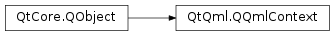

QQmlContext¶
Synopsis¶
Functions¶
- def
baseUrl() - def
contextObject() - def
contextProperty(arg__1) - def
engine() - def
isValid() - def
nameForObject(arg__1) - def
parentContext() - def
resolvedUrl(arg__1) - def
setBaseUrl(arg__1) - def
setContextObject(arg__1) - def
setContextProperty(arg__1, arg__2) - def
setContextProperty(arg__1, arg__2)
Detailed Description¶
-
class
PySide2.QtQml.QQmlContext(parent[, objParent=nullptr])¶ -
class
PySide2.QtQml.QQmlContext(parent[, objParent=nullptr]) Parameters: - objParent –
PySide2.QtCore.QObject - parent –
PySide2.QtQml.QQmlContext
- objParent –
-
PySide2.QtQml.QQmlContext.baseUrl()¶ Return type: PySide2.QtCore.QUrl
-
PySide2.QtQml.QQmlContext.contextObject()¶ Return type: PySide2.QtCore.QObject
-
PySide2.QtQml.QQmlContext.engine()¶ Return type: PySide2.QtQml.QQmlEngine
-
PySide2.QtQml.QQmlContext.isValid()¶ Return type: PySide2.QtCore.bool
-
PySide2.QtQml.QQmlContext.nameForObject(arg__1)¶ Parameters: arg__1 – PySide2.QtCore.QObjectReturn type: unicode
-
PySide2.QtQml.QQmlContext.parentContext()¶ Return type: PySide2.QtQml.QQmlContext
-
PySide2.QtQml.QQmlContext.resolvedUrl(arg__1)¶ Parameters: arg__1 – PySide2.QtCore.QUrlReturn type: PySide2.QtCore.QUrl
-
PySide2.QtQml.QQmlContext.setBaseUrl(arg__1)¶ Parameters: arg__1 – PySide2.QtCore.QUrl
-
PySide2.QtQml.QQmlContext.setContextObject(arg__1)¶ Parameters: arg__1 – PySide2.QtCore.QObject
-
PySide2.QtQml.QQmlContext.setContextProperty(arg__1, arg__2)¶ Parameters: - arg__1 – unicode
- arg__2 – object
-
PySide2.QtQml.QQmlContext.setContextProperty(arg__1, arg__2) Parameters: - arg__1 – unicode
- arg__2 –
PySide2.QtCore.QObject
© 2018 The Qt Company Ltd. Documentation contributions included herein are the copyrights of their respective owners. The documentation provided herein is licensed under the terms of the GNU Free Documentation License version 1.3 as published by the Free Software Foundation. Qt and respective logos are trademarks of The Qt Company Ltd. in Finland and/or other countries worldwide. All other trademarks are property of their respective owners.